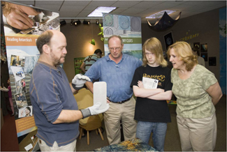

|

Earth is a dynamic planet that has experienced wide changes in climate through its geological history. How fast has climate changed in the past? How much warmer or colder has it been? What can we learn about possible future climate changes by studying the history recorded in rock and ice cores from the Polar Regions? Scientists who study Earth's history climb into their "time machines" - - drilling rigs - - and travel back in time by reading the story of climate changes preserved in rock and ice drill-cores. Clues to past climate changes are found in the sediment layers, fossils, gas bubbles and frozen ice collected from deep beneath the Antarctic ice sheet. We will learn how to read these clues and investigate how the Antarctic ice sheets behaved during past warmer time periods, and wonder what this means for future climate.December 2010 "What Climate Secrets are Buried Deep Beneath the Antarctic Ice Sheet?" An interactive session led by Dr. David Harwood Professor in the Department of Earth and Atmospheric Sciences at the University of Nebraska-Lincoln and the Research Director of the ANtarctic geological DRILLing Program (ANDRILL) Dr. David Harwood is a Professor in the Department of Earth and Atmospheric Sciences at the University of Nebraska-Lincoln and the Research Director of the ANtarctic geological DRILLing Program (ANDRILL). His research involves the study of Antarctic sediments and fossils to interpret the geological and climate history of Earth’s last continental frontier. He actively promotes ANDRILL's science education and outreach program for learners of all ages. |